|
COSC 477:Virtual Reality and its Principles
Group Projects, Semester: Fall 2016 |
| |
Project 1: The World's Greatest Race using Unreal Engine
Students: Alonzo Ouzts II and Jeffrey Ojiribe (Project Report) |

|
The main goal is for players to race and come in with the best time by racing through the environment and dodging obstacles. There will be hazardous conditions like debris falling and lava flow.The virtual environment is a volcano that is active. Rocks line the environment while portions of the map have smoking volcanos. The rock asset is modular and is used throughout the map. The material was especially constructed to have glowing cracks in it. It is also used towards the end of the map to represent a destructible mesh that has rocks fly everywhere.There is also a lava asset constructed from scratch that can be applied to multiple meshes such as a plane or rock. Characters were used from the engine with already pre-built animations.
Modeled checkpoints are using a particle system.
Lighting:
There is a directional light that serves as the main light source. The other lights used are checkpoint fire particle system that emits a light as well as a volcano particle system that has a violent fire at the peaks of the volcanos.
Timers:Timers are used within the checkpoint blueprints to signify when the previous checkpoint was passed in order to activate the next checkpoint. Also they are used for the race itself for lap time and race time.
Keyboard Functionalities: Keyboard functions are how to control the character vehicle with the arrow keys or WASD.
Other keyboard functions are from numbers 0-9 they are hotkeyed to control npc movement from where they are to a target point at the end of the map.
|
 |
 |
Volcano map |
destructable mesh |
 |
 |
| volcano |
main road |
Project 2: Virtual Museum For Assembly using Unity 3D
Students: Darren Sumpter, Phillip Devreaux
(Proj. Report) |
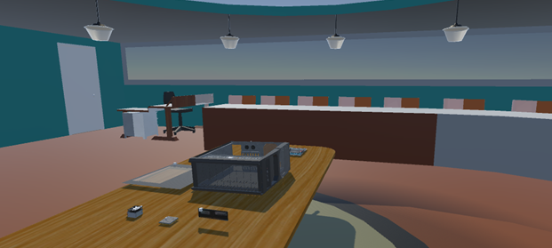
Computer Assembly |
The goal of this project was to create a realistic teaching environment where users could go to learn how to perform practical tasks such as tire changing and computer building. Furthermore, we wanted our environment to be so realistic that once users performed these practical tasks in the virtual simulation, they would need zero real world experience after using our simulation. Users would just be able to encounter the real life situation with complete confidence in their newly acquired skill set gained from the virtual environment.Action events are used in the environment to animate the tire iron and jack to lift the car,open the trunk, remove screws, remove the tire, and add a spare tire.
The environments consist of a realistic car model, car part models, computer part models, desks, an auto shop, a classroom, and a lobby where the simulation initially starts. These parts were used to add realism to the 3D environment. For example, the user starts the simulation in a 3D lobby where they can go up to a wall where there are picture frames put into two categories.The two categories are labeled car care and computer care
|
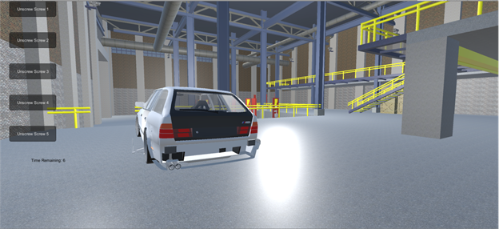 |
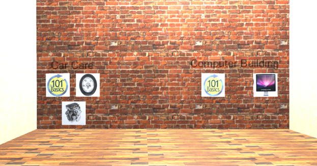 |
The auto shop for car care |
lobby environment where users can choose simulations. |
| 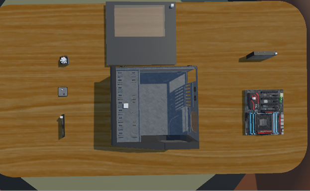 |
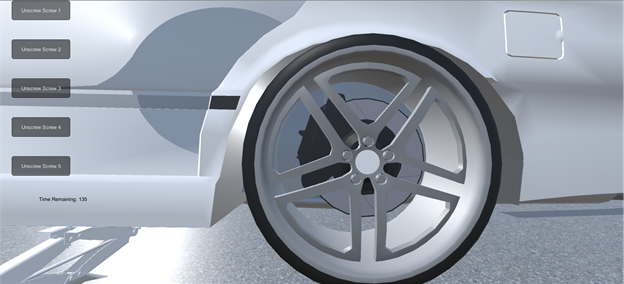 |
| Computer assembly |
|
| 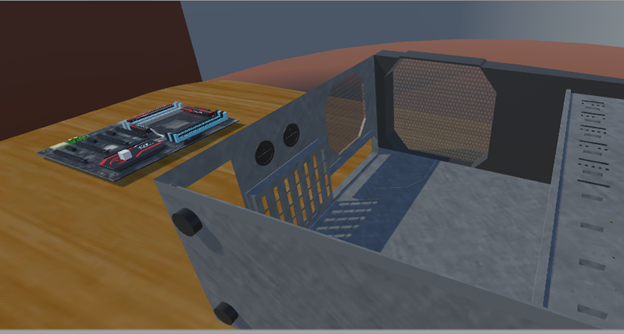 |
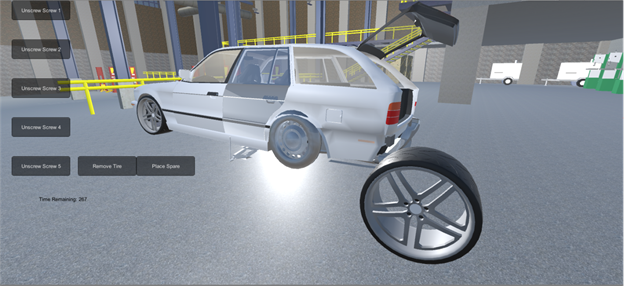 |
Project 3: Shopping in a Virtual Mall using Unity 3D
Students:yacine gaye, Chigozie Mbanaso (Project Report) |
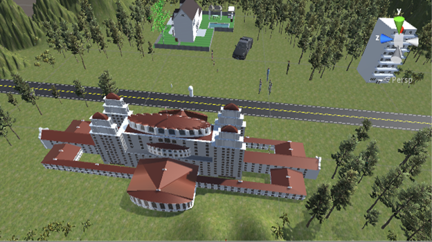 |
The objective of this project was to create a virtual mall that people can use to do online shopping. This project is created to help people shop online in the virtual mall while having the feeling of being in an actual mall and they will be able interact with the environment and see the items in 3D. The mall has two levels and there are several store in each level.
The modeling of the area of the mall consist of an outdoor environment. The mall is in a small city and is surrounded by buildings. The environment also includes trees, a road that lead to the mall, street lights, cars, and people. The mall is an attractive white building very easy to locate. The entry consists of door which a sensor that take the first person controller to the interior when you get close to it. The buildings were imported from google sketchup and the trees, mountains, water and the rest of the environment were modeled in unity3d. . |
| 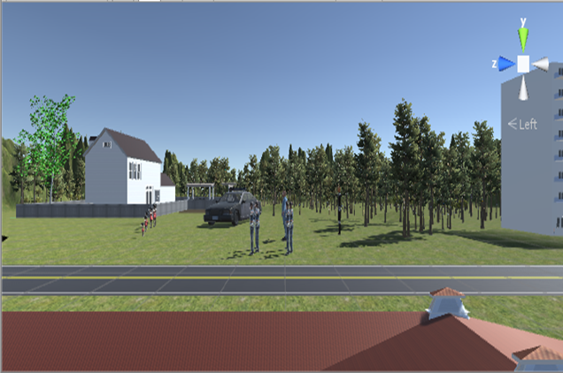 |
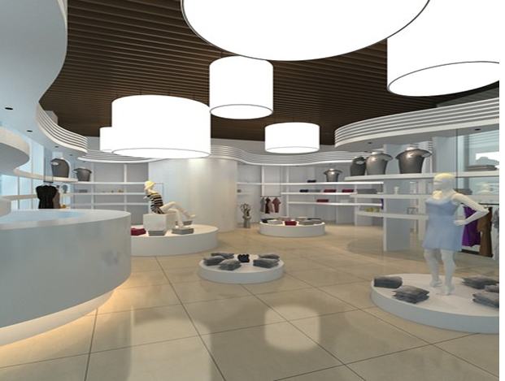 |
| Front view of the mall building |
Interior |
| 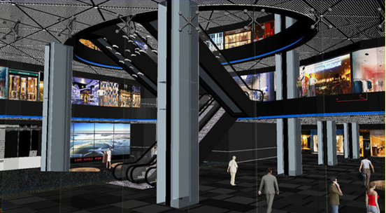 |
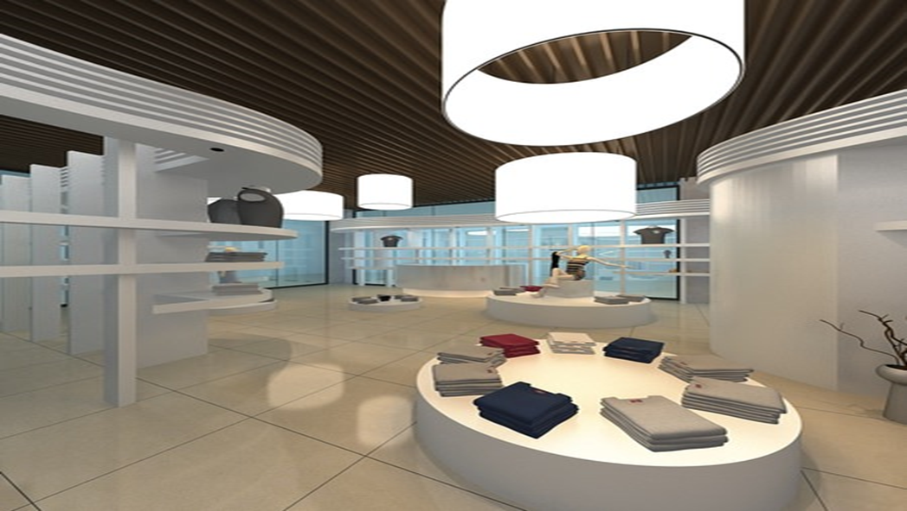 |
| first floor |
second floor |
Project 4: Terrorist game in a battle field environment
By:Enyinna Anamelechi, Tamera Brown, Ibukun Durojaiye
(Project Report) |
 |
The objective of the game is to traverse through each environment or level as an assigned service member. Your task will be to hunt down and exterminate the immediate threat before your health reaches 0 in each environment. At the beginning of each level, your player will be given a full health bar of 100 points to start. But with every shot that you take, it will be a 20% decrease that will be inflicted on your player’s health. You then have to find and eliminate the threat in each level to avoid being eliminated yourself. We plan on using an array of locations, in order to place the terrorist throughout the map effectively. There will be 10 enemies/ terrorist in each environment that has to be eliminated. We planned on implementing a timer for each level giving you a reasonable time to find the terrorists. Each level will also have a hidden health box that will be placed in different locations on the map. |
| |
|
| All Projects for Virtual Reality Class at BSU |
| VRI: 2008, 2009, 2010, 2011, 2012, 2013, 2014 , 2015, 2016, 2017 |
VRII: 2012 , 2013, 2015 |
| |
|
| |
|
|
|
VR LABORATORY (C) 2007-2016, ALL RIGHTS RESERVED |
 |
|

{kind=link}
{kind=link}
{kind=link}
{kind=link}
{kind=link}
{kind=link}